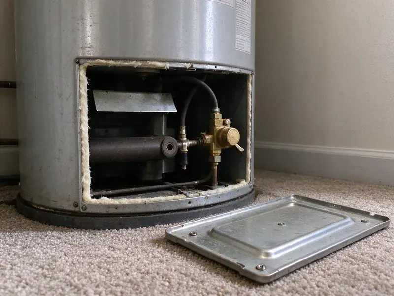

Drain Repairs in Georgetown, KY
For dependable drain repairs throughout Georgetown, KY, trust the skilled plumbers at BFK Plumbing.
- Local Georgetown Experts
- Camera-Verified Diagnosis
- Licensed & Insured
- Warrantied Work

Reliable Drain Repair Solutions in Georgetown, KY.
Our trained plumbers are ready to take on any drain issue, big or small.
Drain Repairs in Georgetown, KY That Solve the Root Problem
At BFK Plumbing, we understand the urgency of drain issues in Georgetown, KY. We offer complete drain repair, tackling everything from corrosion and tree root intrusion to shifting ground and pipe collapses, so your plumbing system operates smoothly.
Our expertise includes:
- Diagnose and clear all types of drain clogs.
- Repairing cracked or collapsed drain pipes
- Cast iron and ABS drain section replacement inside wall cavities

Additional Plumbing Repair Services in Georgetown, KY
We offer expert plumbing repair services across Georgetown, KY to fix leaks, restore flow, and keep your system running smoothly.


Customers
Why Choose BFK Plumbing for Drain Repairs in Georgetown, KY?
A drain problem that keeps coming back almost always means something is physically wrong with the pipe. We diagnose the cause with a camera or pressure test and fix it properly, so you stop paying for the same clog again and again.
- Lasting Solutions, We focus on providing lasting repairs that address the root cause of your drain issues, not just temporary fixes.
- Advanced Tools, We use professional-grade equipment like video inspection cameras and hydro-jetting machines for precise diagnostics and effective repairs.
- Tested Before We Leave, Every repaired drain is flow tested and checked for leaks under load.
Citywide Coverage
Our commitment to Georgetown residents means complete coverage for all your drain repair needs. From the historic districts to newer developments, our teams are familiar with the various plumbing systems and can promptly respond to your service requests.
Experienced Team
Each plumber on our team is trained on drain cameras, augers and hydro-jetting equipment. They explain what they find in plain language and give you options before starting any repair.
Safety-First Approach
We take every precaution, from proper trenching for underground repairs to safe handling of equipment, for a secure work environment and a compliant repair that lasts in Georgetown.
Trusted Certified Georgetown Plumbing Services Professionals
At BFK Plumbing, we take pride in providing licensed, certified plumbing services throughout Georgetown, KY. Backed by recognized industry credentials, our experienced plumbers combine technical skill with genuine customer care. Whether it is repair, installation, or maintenance, we follow strict safety and quality standards to deliver lasting results you can trust.
Call Us Now PHCC Plumbing Contractor Recognition
PHCC Plumbing Contractor Recognition Better Business Bureau (BBB) Accreditation
Better Business Bureau (BBB) Accreditation Angi Certified Pro
Angi Certified Pro ISO 9001 Quality Management Certification
ISO 9001 Quality Management CertificationReliable Drain Repair Services in Georgetown, KY
Cast Iron Drain Stack Repair in Georgetown, KY
Many older homes have cast iron drain stacks and branch lines that are now corroding from the inside. Rust scale catches debris and cracks let water seep into walls and floors. We cut out failing sections and replace them with ABS or PVC using shielded transition couplings. When the whole stack is failing, we quote a full replacement so you can plan the work.

Commercial Drain Repairs in Georgetown
Businesses in Georgetown rely on efficient plumbing, and drain issues can significantly impact operations. Our commercial drain repair services address common problems like grease trap clogs in restaurants, industrial pipe blockages and high-volume restroom drain issues. We provide quick response times to minimize downtime and offer durable solutions designed for commercial wear and tear. Our team is experienced with various commercial plumbing systems and compliance requirements.
Emergency Drain Repairs in Georgetown, KY
A sudden drain backup or major leak is an emergency that needs immediate attention. BFK Plumbing offers emergency drain repair services around the clock in Georgetown, KY. We understand that severe drain issues can rapidly lead to extensive property damage and health hazards. Our emergency team is equipped to handle burst pipes, severe clogs and main line backups, providing fast diagnosis and effective, urgent repairs to restore safety and function.
Clogged Drain Repair in Georgetown
Stubborn clogs are a common issue, usually caused by grease, hair, food particles or mineral buildup from hard water. We use specialized tools like augers, snakes and hydro-jetting to break down and remove blockages effectively. Our technicians can pinpoint the exact location of the clog using camera inspections, for a targeted and efficient repair without unnecessary disruption. We address clogs in kitchen sinks, bathroom drains, utility sinks and main sewer lines, restoring full flow.
Drain Repair Cost Comparison in Georgetown, KY
A trap or slip-joint repair is one of the least expensive plumbing jobs and is often done in under an hour. Replacing a section of branch drain in an open wall or crawlspace costs more but is still a small repair. Opening finished walls or replacing a full stack is the most involved option. We explain each choice and its price so you can decide with confidence.
Kitchen Sink Drain Repair in Georgetown, KY
Kitchen drains are prone to clogs from food particles, grease and soap scum. If your kitchen sink is draining slowly or not at all in Georgetown, KY, BFK Plumbing can help. We clear blockages, repair leaks under the sink and address issues with garbage disposals, so your kitchen plumbing is working properly.
Bathroom Drain Repair in Georgetown
Bathroom drains, including sinks, showers and tubs, frequently get clogged with hair, soap residue and hygiene products. Our team in Georgetown provides efficient repair services for these common problems, clearing blockages and fixing leaks. We also handle more complex issues like faulty pop-up stoppers or failing P-traps.

Drain Vent Repair in Georgetown, KY
A properly functioning drain vent system is key for smooth drainage and preventing sewer gas odors. If you notice gurgling sounds or slow drains in Georgetown, KY, it could point to a blocked or damaged vent pipe. We diagnose and repair vent issues, restoring proper airflow so your plumbing system operates as it should.
Drain Repair Near Me in Georgetown, KY
When you search for 'drain repairs near me' in Georgetown, KY, you want a reliable local plumber who can respond quickly. BFK Plumbing is your neighborhood expert, ready to provide prompt and professional service for all your drain issues. We pride ourselves on our rapid response times and thorough work.
Local plumbers also understand the water quality, home ages and pipe materials common in this area. That experience helps us spot the cause of a recurring drain problem fast. Give us a call and we will get your drains flowing again.
BFK Plumbing at a Glance
- Fully licensed plumbing team covering Georgetown, KY
- Same-day appointments and 24/7 emergency response
- Clear written estimates, no hidden fees
- 4.8-star rated by 309+ Kentucky customers
Georgetown Map
Georgetown Information
- Population
- 39,462
- Area codes
- Local
- Service area
- Georgetown and communities within 40 miles
- Nearby
- Lexington, Frankfort, Nicholasville, Richmond
Effective drain repairs are important in Georgetown, KY because soil movement can stress underground pipes and tree roots can work into older lines, leading to frequent blockages and pipe damage. Crawlspaces and basements are both common in Kentucky, and crawlspace homes make most plumbing repairs easier to reach.
Expert Services
Trust our professionals for reliable BFK Plumbing solutions in Georgetown, KY.
Our Specialized Plumbing Services in Georgetown, KY
At BFK Plumbing, we provide a complete range of plumbing services across Georgetown, KY. From leak detection to full system installations, our team ensures fast, precise, and affordable service for both residential and commercial properties. Explore our core services below:


How Our Drain Repair Process Works in Georgetown, KY
We follow a systematic approach to diagnose, repair and verify all drain issues, delivering reliable results every time in Georgetown, KY.
Request a Quote
Call us at (502) 300-9896 to describe your drain problem and schedule a service appointment. We'll gather necessary details to prepare for your visit.
Diagnosis
Our technician arrives and performs a thorough inspection, often using camera technology, to pinpoint the exact cause and location of your drain issue.
Repair & Restore
We present you with a clear plan and estimate, then complete the necessary repairs, making sure your drains are fully functional before we leave.
Frequently Asked Questions About Drain Repairs in Georgetown
Simple trap or slip-joint repairs usually cost $150 to $350. Replacing a section of drain pipe usually runs $400 to $1,200, and cast iron stack replacement can range from $2,000 to $6,000 depending on access. We provide a written price before we start.
It can. Water softeners are a common upgrade in Kentucky homes, protecting tank water heaters, faucets, and appliances from mineral buildup. Where water is hard, calcium scale builds up inside drain pipes, especially near showers and laundry lines. Over time it narrows the pipe and traps debris, which is why periodic cleaning and prompt repairs matter.
Hydro-jetting is a powerful drain cleaning method that uses high-pressure water to scour the inside of pipes, effectively removing stubborn clogs, grease buildup and even tree roots. It's usually used when traditional snaking isn't enough, or for preventive maintenance on main sewer lines, especially in older homes with buildup issues.
Yes. Our workmanship is warrantied in writing and replacement parts carry their manufacturer warranties. We explain the coverage at the time of service.
Harsh chemical cleaners can soften older ABS glue joints and corrode metal drain parts with repeated use. They also rarely clear grease or scale fully. A mechanical auger or hydro-jet is safer and more effective.
A dry trap, a cracked drain fitting, a failed wax ring or a blocked vent can all let sewer gas into a room. We locate the source with a smoke test or visual inspection and seal it.
Most trap and fixture drain repairs take one to two hours. Replacing drain pipe inside a wall or under a floor can take half a day to a full day. We give you a time estimate when we price the job.
Minor fixture drain repairs typically do not require a permit. Replacing drain stacks, relocating drains or adding new lines often does, depending on the city. We handle permits when they apply.
What People Are Saying About Our Plumbing Experts?

Laura S.
I scheduled a water heater replacement, and the team made the process smooth and affordable. The new unit works perfectly, and they cleaned up after completing the job.
Water Heater Replacement · Nicholasville, KYSofia M.
Two new toilets installed in one visit, no mess left behind, and the tech even adjusted a faucet he noticed was dripping. Fair pricing and really friendly.
Toilet Installation · Independence, KY
Patricia H.
We had a slab leak that two other companies could not find. BFK Plumbing located it in under an hour, explained our options, and the price matched the quote to the dollar.
Slab Leak Repair · Georgetown, KY
Robert G.
The trenchless sewer replacement saved our front yard. They walked us through the camera inspection footage first so we knew exactly what we were paying for.
Sewer Line Replacement · Richmond, KY
Daniel K.
A pipe burst at 11 pm and they actually answered. The plumber showed up within the hour, shut everything down, and had us back to normal the next morning. Could not ask for more.
Emergency Plumbing · Florence, KY
Emily R.
I called BFK Plumbing for plumbing repair, and the technician was fast, polite, and thorough. They explained the problem clearly and fixed it the same day. I will definitely hire them again. Highly recommended!
Plumbing Repair · Nicholasville, KY